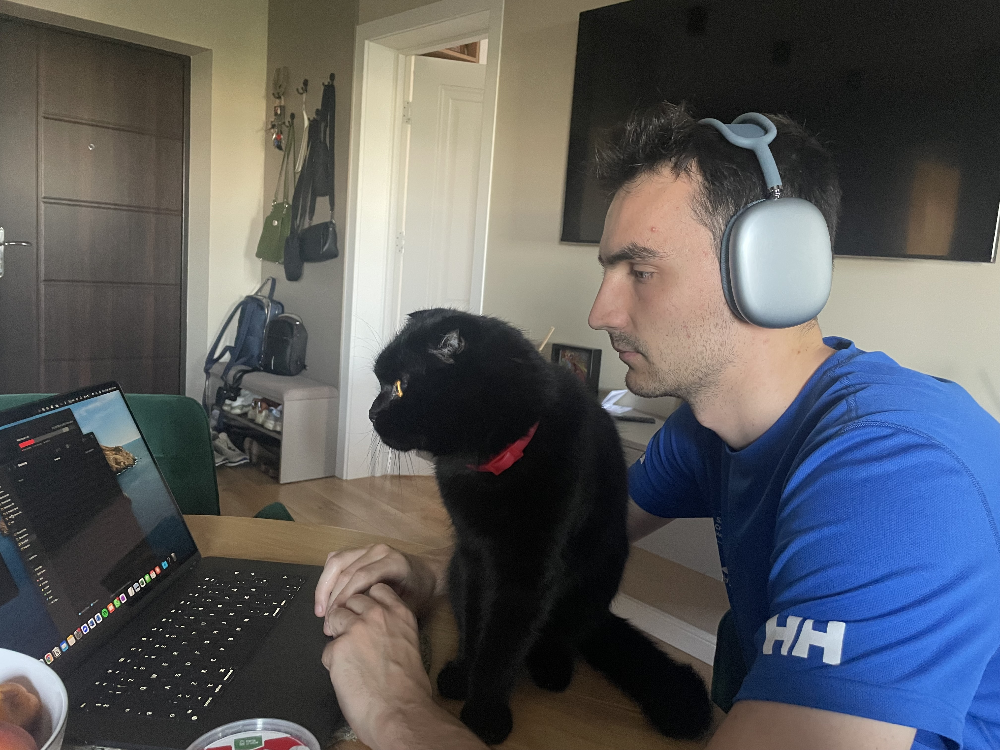

Intro
This website is a hobby I guess.
I will be uploading my projects as well as perhaps maybe a blog to help me track changes and be a bit more self-reflective on my ongoing projects.
This website is a hobby I guess.
I will be uploading my projects as well as perhaps maybe a blog to help me track changes and be a bit more self-reflective on my ongoing projects.

Things will soon come.
Started Learning Python, we'll see where this is going to go
To be continued.